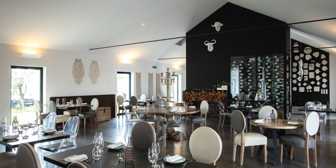

Restaurante Palma
No restaurante Palma, descubra a essência alentejana elevada a um novo patamar.
A genuinidade e generosidade deste interior alentejano, rodeado de castelos, prados e de uma beleza natural única, foi palco para, mais uma vez, o Chef Miguel Laffan se inspirar e criar um conceito de cozinha atual alentejana.

